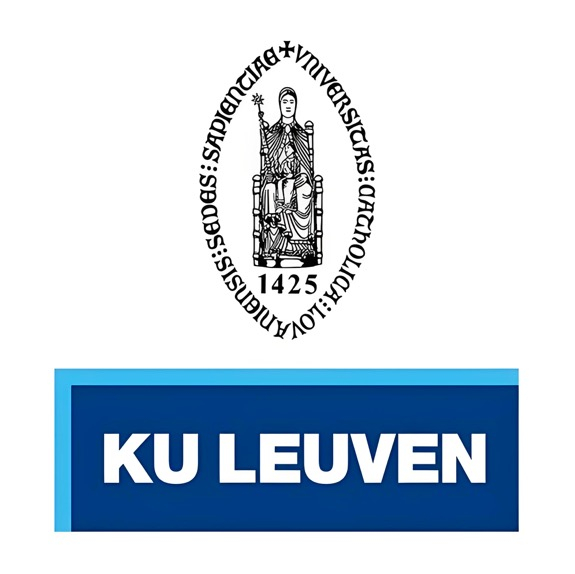
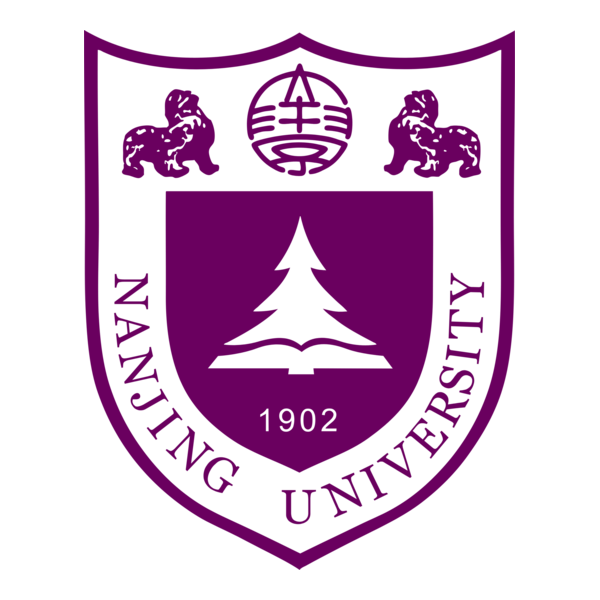
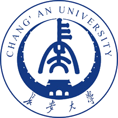
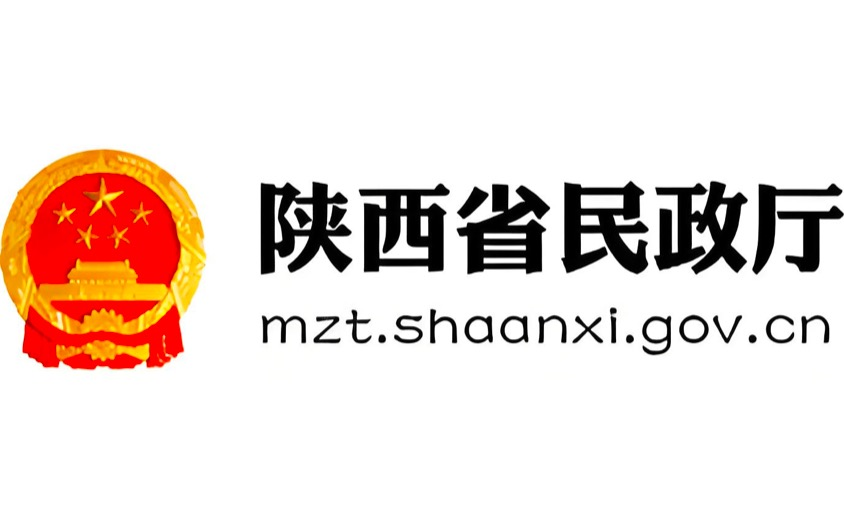
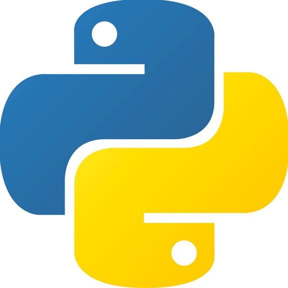
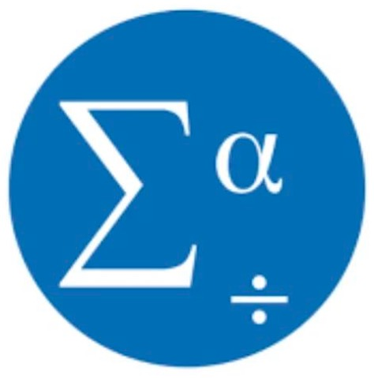
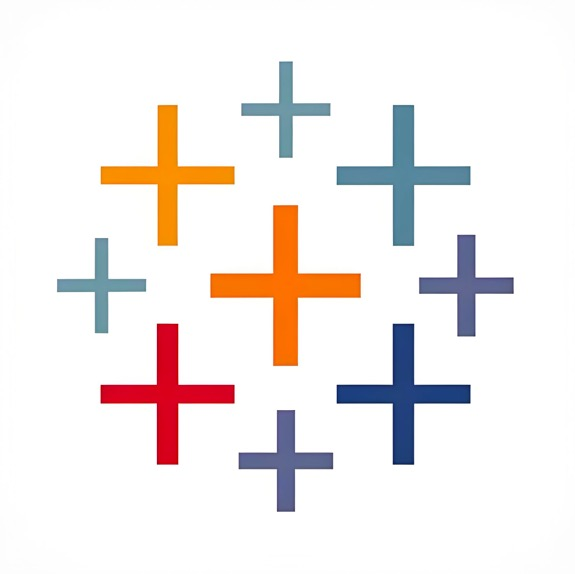
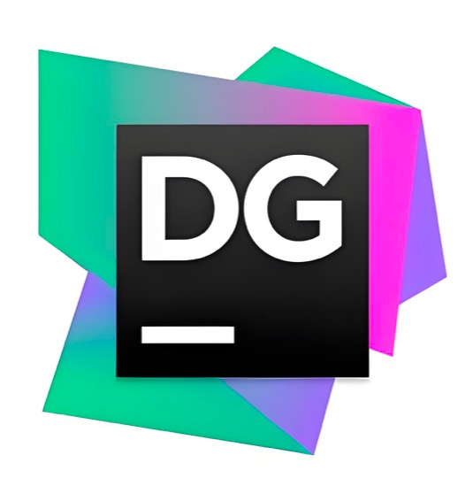
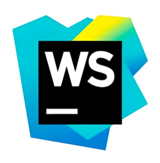
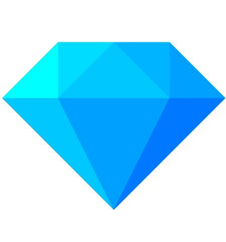

Welcome to my personal website!
I’m Wang Cunshuang ( Wesley ) , a researcher with a background in communication and journalism studies.
My research focuses on urban news ecosystems, news flow, media education and open access.
This site is still under construction. In the future, I plan to share updates on research projects and research data. Feel free to reach out via email if you'd like to connect or discuss shared interests.
EDUCATION

KU Leuven
Master in Digital Humanities
Sep 2024 - Sep 2025
⌄
Spearheaded the development of scalable web solutions, optimizing user experience for SaaS platforms
. Led a team in crafting responsive, high-performing web interfaces using modern frameworks.

Nanjing University
Master in Journalism
Sep 2019 - Jun 2022
⌄
Spearheaded the development of scalable web solutions, optimizing user experience for SaaS platforms
. Led a team in crafting responsive, high-performing web interfaces using modern frameworks.

Chang'an University
Bachelor in Journalism and Communication
Sep 2014 - Jun 2018
⌄
Spearheaded the development of scalable web solutions, optimizing user experience for SaaS platforms
. Led a team in crafting responsive, high-performing web interfaces using modern frameworks.
ACADEMIC PUBLICATIONS
Mapping China’s Urban Networked News Ecosystem:
Analyzing the Impact and Positioning of Journalistic Entrepreneurial Media
Cunshuang Wang
⌄
Poster
presentation accepted at the 75th Annual Conference of the International Communication
Association (ICA), Denver, CO, USA, June 12–16, 2025.
How Does Parental Involvement Influence Children's
Self-Regulated Learning in Digital Media Era: a Systematic
Review of Empirical Studies
Linxi Zhao, Cunshuang Wang
⌄
Poster presentation accepted at UCL Sociology Network PhD Student Conference 2025, London, UK, June 3, 2025.
2021 Global Journalism Innovation Report
Journalism Innovation Laboratory
⌄
Journalism Innovation Laboratory, School of Journalism and Communication, Nanjing
University. (2022). 2021 Global Journalism Innovation Report, Journalism Review (pp.37-
56).DOI:CNKI:SUN:XWJZ.0.2022-01-004
Why Fake News is Stubborn: Alternative
Stories and Communication Boundary Wall——A case study based on the social topic of
“ A Dusty Porsche ”
Chenyao Wang, Cunshuang Wang
⌄
Chenyao Wang, Cunshuang Wang. (2021). Why Fake News is Stubborn: Alternative
Stories and Communication Boundary Wall——A case study based on the social topic of
“ A Dusty Porsche ”, News and Writing (pp.29-38). DOI:CNKI:SUN:XWXZ.0.2021-09-
007
2020 Global Journalism Innovation Report
Journalism Innovation Laboratory
⌄
Journalism Innovation Laboratory, School of Journalism and Communication, Nanjing
University. (2021). 2020 Global Journalism Innovation Report, Journalism Review (pp.38-
56). DOI:10.16057/j.cnki.31-1171/g2.2021.01.004
Why are most perpetrators of
campus violence middle school students? Discussion gaps in relevant legislation
Haihua Sun, Jianfeng Zhao, Cunshuang Wang.
⌄
Haihua Sun, Jianfeng Zhao, Cunshuang Wang. (2016). Why are most perpetrators of
campus violence middle school students? Discussion gaps in relevant legislation, Yunnan
education(pp.46-48).DOI:CNKI:SUN:YNJB.0.2016-09-026
PROFESSIONAL EXPERIENCE

Intern
Shaanxi Provincial Department
Journalist in Training
China Youth Daily
Journalist in Training
Sanqin Daily
SKILLS






AWARD
Outstanding Graduate (2022)
Nanjing University
Outstanding Postgraduate Student (2021)
Nanjing University
Yingcai Scholarship (2021)
Nanjing University
First Prize in in-depth reports for Campus News in Shaanxi Province (2017)
Chang'an University
Cadre Scholarship, Outstanding League Member (2017)